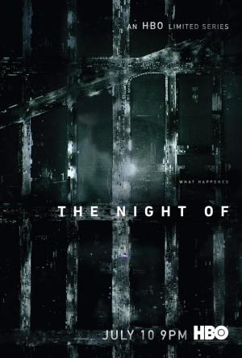

The Night Of |
|---|
| Una miniserie de Steven Zaillian y Richard Pride |
|  |
|
|---|---|
|
|
|
|
|
Vemos la historia de Naz, un estudiante de origen pakistaní que asistía una noche a una fista a las afueras de Nueva York, pero despierta desorientado junto al cadáver de una chica que conoció esa noche.
Acobardado huye de la escena del crimen y posteriormente es arrestado. Para su defensa recurre a un abogado de poca monta.